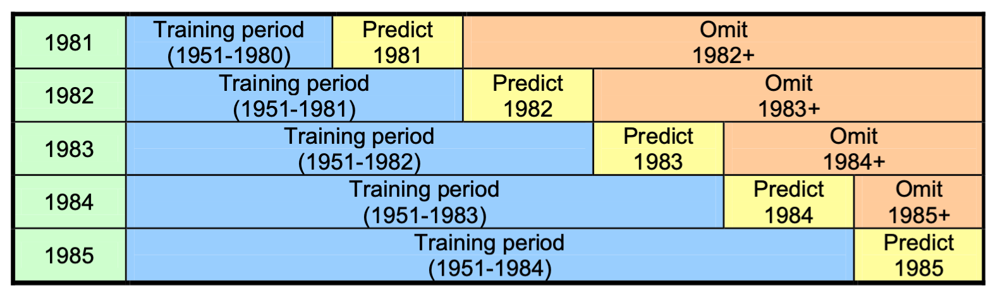

Configuring PyCPT for SubX
Contents
Configuring PyCPT for SubX#
We will use the CFSv2, GEFSv12 and FIM SubX models to build a subseasonal MME.
As in the seasonal case, the application of MOS to subsesasonal forecasts using PyCPT requires the choice of:
Choose SubX model & observed dataset
Select MOS methodology
Select predictor & predictand and spatial domains
Forecast date and training season
Select Forecast lead intervals
First choose a case name for your experiment, a working directory, and specify the CPT root directory.
SubX model & observed dataset#
Predictor#
Precipitation from the ECMWF, NCEP-CFSv2, EMC-GEFSv12, ECCC-GEPS6 and ESRL-FIM are ready for use.
Spatial resolution: The SubX data is available on a 1-degree grid, while the S2S data is 1.5-degree. Note that the native model resolutions are often finer than these.
The CFSv2 is available in both S2S and SubX formats.
########Model (choose between ECMWF, CFSv2, GEFS, CFSv2_SubX, GEPS6)
model='CFSv2_SubX'
Predictand#
Precipitation from CHIRPS in the primary precipitation dataset ready for use. Several others can also be chosen (TRMM, CPC, IMD1deg, IMDp25deg). Temperature will be added shortly. Rainfall frequency is not yet available in the subseasonal version.
CHIRPS is regridded to a 0.5-degree grid for use with PyCPT.
########Obs (choose between CHIRPS, TRMM, CPC, IMD1deg, IMDp25deg)
obs='CHIRPS'
Choice of MOS Method#
Canonical Correlation Analysis (CCA), Principal Componentes Regression (PCR), and the no-MOS option can all be used for the subseasonal models. Extended Logistic Regression (ELR) (applied gridpoint-by-gridpoint) is under development.
CCA is currently recommended as the default choice.
########MOS method (choose between None, PCR, CCA and ELR)
MOS='CCA'
Forecast date and training season length#
Because subseasonal forecasts are initialized every week—many times within each season—the training sample of hindcasts can be increased by selecting multiple start times each year, provided these fall within a climatologically homogeneous season (e.g., a monsoon season). For example, weekly starts over a 3-month season yields ~12 hindcast samples per year, resulting in a total of 12x20=240 hindcasts for a 20-year set of hindcasts. This is a much larger training sample than in seasonal applications where only one 3-month sample per hindcast year is used, and the number of hindcasts is 40 or less.
This is a major difference between subseasonal and seasonal PyCPT, potentially allowing more robust subseasonal forecasts to be built.
PyCPT allows the training_season length to be set as one or more contiguous calendar months,
which should be specified around the forecast start date, controlled by the choices of mon, fyr and fday parameters:
########Forecast date
##-- If ECMWF, it needs to be a Monday or a Thursday! CFSv2: any day; GEFS: Wednesdays.
mon='Jun' # Forecast month
fyr=2020 # Forecast year
fday=1 # Forecast day (Monday and Thursday in ECMWF model; yesterday in CFSv2: real time)
#training_season=mon
training_season='May-Jul' # with *mon* in the middle, e.g., 'May-Jul' if mon='Jun'
The sensitivity of the results to the length of season training_season (e.g., 1 month vs 3 months) should be checked, bearing in mind that small sample sizes may lead to large sampling variability in skill scores.
Predictor and Predictand spatial domains#
When using CCA (and PCR), the predictor domain should be chosen large enough to resolve the regional structure of the S2S modes of predictability impacting the region. It is usually set somewhat larger than the predictand domain, so as to resolve the regional large-scale structure of the S2S modes in the forecast model.
West Africa example:
# Spatial domain for predictor
nla1= 30 # Northernmost latitude
sla1=-5 # Southernmost latitude
wlo1=-30 # Westernmost longitude
elo1= 30 # Easternmost longitude
# Spatial domain for predictand
nla2= 20 # Northernmost latitude
sla2= 1 # Southernmost latitude
wlo2=-20 # Westernmost longitude
elo2= 10 # Easternmost longitude

Forecast lead time intervals#
The lead time intervals define how far into the future we wish to predict, and over what length of the time the forecast should be averaged. PyCPT will develop a separate MOS for each interval. For simplicity, these are defined as a number of “weeks” but the start and end (lead) days defining each can be chosen at will.
nwk controls the number of times that CPT will be run (once for each lead time).
Setting nwk=1 (week 1) can save time when testing your set-up. The skill should be high
in week 1and will generally drop a lot in weeks 2–4.
Note that the precise values of day1 and day2 depend on the chosen model and variable.
Follow the instructions in the Jupyter notebook:
########Forecast lead interval -- This counts using L, the lead time; e.g., ECMWF L=0..46 (NOT calendar days)
nwk=4 # Number of weeks to process (leads)
# Lists for looping over lead times -- ALL these arrays should have the same dimension (see nwk above), as they correspond
wk = [1 ,2 ,3 ,34 ,4 ] # week-lead number label (e.g., corresponding to week1, week2, week3, week4, week1-4/month 1)
wknam= ['Week 1','Week 2','Week 3','Week 3-4','Month 1'] #naming the weeks (for plots) --can use a different language here
day1 = [1 ,7 ,14 ,14 ,21 ] # first lead day of target weeks
day2 = [7 ,14 ,21 ,28 ,28 ] # last lead day of target weeks
# ECMWF - first day is day 0, 0000Z accumulated rainfall; specify day1=1 for week 1
# GEFS - first day is day 0.5 (daily average rainfall rate); specify day1=0 for week 1
# CFSv2 - first day is day 1, 0000Z accumulated rainfall over the first day; specify day1=1 for week 1
Choice of training and verification periods#
The limited hindcast period (20 years at most for S2S) must be used to both train and assess skill (verification), each of which requires large sets of independent non-overlapping data.
CPT distinguishes deteriministic Model Validation Measures from probabilistic Forecast Verification. CPT does not enable probabilistic scores (like RPSS) to be computed using cross-validation because the cross-validated hindcast errors are used to compute forecast spread. Since the left-out obs data is already used once, it cannot be used a second time assess the skill of forecast probabilities. CPT solves this dilemma using Retroactive Forecasting which mimics real-time forecasting: only data prior to the hindcast year is used to train the model.
Illustration of Retroactive Forecasting in seasonal case.
{kind=link}
PyCPT-Subseasonal uses Retroactive Forecasting to train and verify the MOS model.
This requires choosing the length of initial training period lit and the update interval liti (both in numbers of hindcast samples).
lit=80 # Initial training period for retroactive forecasts (in timesteps)
liti=10 # Update interval for retroactive forecasts (in timesteps)
A simple rule of thumb is to set lit equal to 50% of the hindcast dataset and liti to update once a year. For example, given a 20-yr set of twice-weekly hindcasts for the month of June, lit=80 would equate with 10 years x 1 month x 8 starts per month, i.e. about 50%. Setting liti=10 updates the model every 5 weeks if the forecasts are twice weekly.
The values of lit and liti should be adjusted in the following block of code, if needed. The default values should be fine in most cases.
########Model-dependent parameters
if model=='CFSv2':
hstep = 7 # use all starts in the trainng period with this daily step between them
nlag = 3 # length of the lagged ensemble in days
ntrain= 55 # Length of training period (5 weeks x 11 hindcast years) (363 before)
lit = 28
liti = 10
elif model=='ECMWF' or model=='ECMWFrt':
hstep = 0 # bogus but needed by functions (eliminate in the future)
nlag = 0 # bogus but needed by functions (eliminate in the future)
ntrain= 160 # Length of training period
lit = 110
liti = 20
elif model=='GEFS':
hstep = 0 # bogus but needed by functions (eliminate in the future)
nlag = 0 # bogus but needed by functions (eliminate in the future)
ntrain= 219 # Length of training period (1999-2016)
lit = 100
liti = 20
elif model=='GEPS6':
hstep = 0 # bogus but needed by functions (eliminate in the future)
nlag = 0 # bogus but needed by functions (eliminate in the future)
ntrain= 260 # Length of training period (1998-2017)
GEPShdate1 = '0000 4 Jun' # first hindcast date each year in training season
# Must be a THURSDAY in the forecast year since GEPS is an on-the-fly model
GEPShdate1 = parse.quote(GEPShdate1)
lit = 120
liti = 20
elif model=='CFSv2_SubX':
hstep = 7 # use all starts in the trainng period with this daily step between them
nlag = 3 # length of the lagged ensemble in days
ntrain= 234 # Length of training period for 3 month season (1638/7=234)
lit = 100
liti = 20
Note that there is a danger of overfitting the MOS model if the skill results are “tuned” to maximize them, unless some independent data is available to re-test model. This could be a set of forecasts outside of the SubX 1999–2016 hindcast period, for example.
In machine learning, the data is often split into three parts: the training, validation and test sets. The training dataset is used to actually fit the model. The validation dataset is used during experimentation to check the model performance on data not seen during training. But, as mentioned above, there is the danger that through continued tuning of hyperparameters one unwillingly overfits to the validation dataset. Therefore, a third, test dataset for final evaluations of model performance is used. Typically this final test dataset may sometimes be restricted to a few recent years. [Rasp]